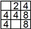
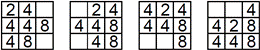
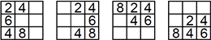

Zadania trzeciego etapu Konkursu Informatycznego dla gimnazjalistów LOGIA 15
Zadanie 1 (szyfr).
Kuba koduje teksty za pomocą szyfrów obrazkowych. Najpierw ustala alfabet zawierający litery, które będą występować w szyfrowanym słowie. Następnie koduje słowo za pomocą prostokątów o różnych wymiarach. Wysokość prostokąta odpowiadającego kolejnej literze słowa zależy od jej pozycji w alfabecie i wynosi, odpowiednio, 10 dla pierwszej litery alfabetu, 20 dla drugiej, 30 dla trzeciej itd. Szerokość prostokąta zależy od pozycji litery w szyfrowanym słowie i jest równa 10 dla pierwszej litery słowa, 20 dla drugiej, 30 dla trzeciej itd.
Julka odszyfrowuje zakodowany tekst – zdanie, w którym spacje zakodowane zostały za pomocą prostokątów o wysokości 0 (odcinków).
Napisz dwuparametrową funkcję deszyfr, której wynikiem jest lista odkodowanych słów. Pierwszy parametr jest alfabetem i składa się z co najwyżej 26 liter (małe litery alfabetu łacińskiego). Drugi parametr to lista dwuelementowych list określających wysokości i szerokości prostokątów stanowiących elementy zaszyfrowanego zdania.
Przykłady – Logo:
| Wynikiem | deszyfr "acdeh [[10 20][30 10][50 40][20 30]] | jest [dach]. |
| Wynikiem | deszyfr "rklotam [[60 10][30 20][60 30][0 40][70 50][60 60][0 70][20 80][40 90][50 100][60 110]] | jest [ala ma kota]. |
Przykłady – Python:
| Wynikiem | deszyfr('acdeh',[[10,20],[30,10],[50,40],[20,30]]) | jest ['dach']. |
| Wynikiem | deszyfr('rklotam',[[60,10],[30,20],[60,30],[0,40],[70,50],[60,60],[0,70],[20,80],[40,90],[50,100],[60,110]]) | jest ['ala','ma','kota']. |
Zadanie 2 (redukcja).
Janek bawi się cyframi i zapisuje je na kwadratowej tabliczce o wymiarach n x n (2 ≤ n ≤ 20). |  Przykładowa tabliczka o wymiarach 3x3 |
Następnie przechyla tabliczkę i liczby spadają w jednym z czterech kierunków. |  Ta sama tabliczka bezpośrednio po pochyleniu w różnych kierunkach (odpowiednio: w lewo, w prawo, w górę, bądź w dół) |
Dodatkowo następuje redukcja – jeśli dwie sąsiednie (licząc zgodnie z kierunkiem spadania) liczby są takie same, to zastępowane są ostatnią cyfrą ich sumy. Zastępowanie kontynuowane jest dla pozostałych liczb w wierszu (kierunki lewo-prawo) lub kolumnie (kierunki góra-dół). Analiza danego wiersza/kolumny powtarzana jest aż do momentu, gdy nie uda się dokonać żadnej takiej zamiany. |  Ta sama tabliczka po pochyleniu w różnych kierunkach (odpowiednio: w lewo, w prawo, w górę, bądź w dół) i redukcji |
Napisz dwuparametrową funkcję redukcja, której pierwszym parametrem jest lista list opisujących kolejne wiersze tabliczki (0 – oznacza puste miejsce), a drugim – słowo opisujące sekwencję kolejnych pochyleń (l oznacza kierunek w lewo, p – prawo, g – górę, d – dół) . Wynikiem jest stan tabliczki po przekształceniach. Maksymalna długość słowa będącego drugim parametrem to 1000.
Przykłady – Logo:
| Wynikiem | redukcja [[0 2 4][4 4 8][4 0 8]] "dldld | jest [[0 0 0][0 0 0][4 0 0]]. |
| Wynikiem | redukcja [[1 1 1 1][1 1 1 1][1 1 1 1][1 1 1 1]] "lpdg | jest [[0 0 0 6][0 0 0 0][0 0 0 0][0 0 0 0]]. |
Przykłady – Python:
| Wynikiem | redukcja([[0,2,4],[4,4,8],[4,0,8]],'dldld') | jest [[0,0,0],[0,0,0],[4,0,0]]. |
| Wynikiem | redukcja([[1,1,1,1],[1,1,1,1],[1,1,1,1],[1,1,1,1]],'lpdg') | jest [[0,0,0,6],[0,0,0,0],[0,0,0,0],[0,0,0,0]]. |
Zadanie 3 (wykreślanka).
Sławek bawi się słowem i usuwa z niego litery. Chce, by pewne trzy wyróżnione litery występowały w zadanej kolejności, choć niekoniecznie obok siebie. Zapisuje wszystkie powstałe w ten sposób słowa w uporządkowanej alfabetycznie liście.
Napisz funkcję abc, o trzech parametrach, której pierwszym parametrem jest słowo, którym bawi się Sławek, nie dłuższe niż dziesięcioliterowe, zawierające jedynie małe litery alfabetu łacińskiego. Drugim parametrem jest trzyliterowe słowo, składające się z liter wyróżnionych przez Sławka. Wynikiem funkcji jest to słowo z listy Sławka, które znajduje się w niej na pozycji określonej trzecim parametrem funkcji. Trzeci parametr może przyjmować wartości od 1 do 5000. Jeśli jego wartość jest większa niż liczba elementów listy Sławka, to wartością funkcji jest słowo puste.
Przykłady – Logo:
| Wynikiem | abc "abebc "abc 5 | jest "aebc (bo jest piątym elementem listy Sławka: [abbc abc abebc abec aebc]). |
| Wynikiem | abc "xabacxy "abc 3 | jest "abacxy (w tym przypadku początkowe elementy listy Sławka to "abac, "abacx, "abacxy). |
Przykłady – Python:
| Wynikiem | abc('abebc','abc',5) | jest aebc (bo jest piątym elementem listy Sławka: ['abbc','abc','abebc','abec','aebc']). |
| Wynikiem | abc('xabacxy','abc',3) | jest abacxy (w tym przypadku początkowe elementy listy Sławka to 'abac','abacx','abacxy'). |
Zadanie 4 (jaszczurka).
Wzdłuż ulicy stoją domy. Jedne z nich stykają się bocznymi ścianami, a pomiędzy innymi może być wolne miejsce. Jaszczurka wędruje po dachach. Rozpoczyna swoją podróż na poziomie ziemi przed pierwszym domem, wspinając się pionowo na jego dach. Następnie porusza się po kolejnych dachach, pomiędzy domami wchodząc wyżej (gdy kolejny dom jest wyższy od poprzedniego) lub schodząc (gdy kolejny dom jest niższy), być może nawet do poziomu ziemi (gdy napotka wolne miejsce pomiędzy kolejnymi domami). Swoją podróż kończy na poziomie ziemi za ostatnim domem.
Napisz jednoparametrową funkcję droga, której parametrem jest lista, składająca się z dwuelementowych list opisujących szerokości i wysokości kolejnych domów oraz ewentualnie pojedynczych liczb opisujących odległości pomiędzy domami. Wynikiem funkcji jest długość drogi przebytej przez jaszczurkę.
| W Logo - wynikiem | droga [[40 20][50 30]10[20 20]20[40 10]] | jest 300. |
| W Pythonie - wynikiem | droga([[40,20],[50,30],10,[20,20],20,[40,10]]) | jest 300. |